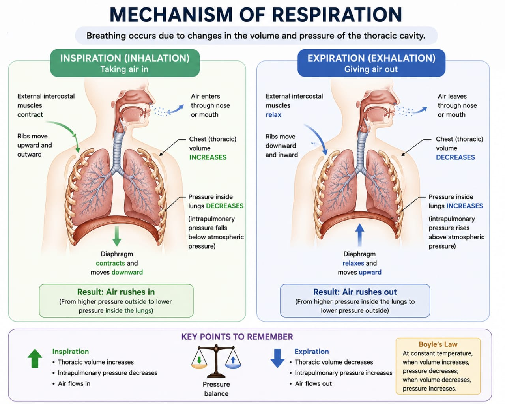

Organs & Air Passages
The respiratory system is two things: a set of air passages that condition and carry air, and the lungs where the actual gas exchange happens.
DefRespiratory System
The organs responsible for breathing air in and out, and exchanging oxygen and carbon dioxide between air and blood. Consists of the air passages and the lungs.
Lungs are the respiratory organs; respiration through the lungs is called pulmonary respiration. Their job: bring atmospheric oxygen into the blood, and remove carbon dioxide from it.
Nasal cavities are separated by the nasal septum and open into the pharynx at the back through the internal nostrils. They carry the sense organs of smell, a mucous membrane, and small hairs that filter dust and foreign particles — so air is filtered, warmed, and moistened before it goes any further.
Pharynx is the shared passage for both air and food, in two parts: the nasopharynx (air only) and oropharynx (food, and air during mouth breathing).
Larynx (voice box) guards the entrance to the trachea. Its opening is the glottis, covered by a cartilaginous lid, the epiglottis, which closes during swallowing to keep food out of the trachea. Elastic vocal cords stretched across the cavity vibrate to produce sound, and the whole structure is supported by the thyroid cartilage (the "Adam's apple") and the cricoid cartilage.
Trachea (windpipe) is a cartilaginous tube about 12 cm long and 2.5 cm across, held open by 15–20 C-shaped cartilage rings so it never collapses. Its lining combines ciliated epithelium with mucus-secreting goblet cells — the cilia sweep trapped dust and mucus upward as sputum, to be cleared. It divides into two bronchi, one to each lung.
Bronchi and bronchioles keep subdividing inside the lung: bronchus → secondary bronchi → tertiary bronchi → bronchioles → terminal bronchioles → respiratory bronchioles → alveolar ducts → alveolar sacs → alveoli.
Alveoli are the respiratory unit — the structural and functional unit of the lung. Each alveolus is very thin (about 0.5 µm), lined by simple squamous epithelium, and wrapped in highly permeable blood capillaries. This is where O₂ and CO₂ actually cross by diffusion.
Pleura and thoracic cavity: each lung sits in the thoracic cavity, one on either side of the mediastinum, wrapped in a double-layered membrane, the pleura — an outer parietal layer and an inner visceral layer. The space between them, the pleural cavity, is filled with pleural fluid, which reduces friction as the lungs expand and recoil during breathing. The right lung has three lobes (superior, middle, inferior); the left has two (superior, inferior) — it makes room for the heart.
Mechanism of Breathing
Breathing is a pressure-volume game: change the size of the thoracic cavity, and air follows the pressure difference.

Breathing (ventilation) is a cyclic process with two phases, and they work by opposite mechanics. Inspiration is active: muscles contract to enlarge the thoracic cavity, which drops the pressure inside the lungs below atmospheric pressure, so air rushes in. Expiration in quiet breathing is passive: those same muscles simply relax, the elastic lungs recoil to their smaller resting size, pressure inside rises above atmospheric, and air is pushed back out. Either way, air moves to equalise pressure — there's no separate "pump" pushing air in or sucking it out; it's all a matter of pressure following volume.
a) Inspiration (active)
- Diaphragm contracts and flattens (moves down) — increases the vertical diameter of the thorax.
- External intercostal muscles contract — ribs move up and outward, increasing the antero-posterior and transverse diameters.
- Result: thoracic cavity volume increases → intrapulmonary pressure drops below atmospheric → air rushes into the lungs.
b) Expiration (passive)
- Diaphragm and intercostal muscles relax.
- Lungs recoil due to their own elasticity; thorax volume decreases.
- Intrapulmonary pressure rises above atmospheric → air is expelled.
Labored/forced expiration recruits internal intercostals and abdominal muscles to actively push the thorax volume down further — but that's not the default quiet-breathing mechanism above.
Two mechanical facts from this section carry straight into practice: (1) inspiration is an active, muscular act — deliberately slowing and deepening it is deliberately changing muscular effort, not just "relaxing"; (2) quiet-breathing expiration is passive, driven by elastic recoil, which is why a forced, effortful exhale (as in several pranayama techniques) needs active abdominal/intercostal recruitment beyond the everyday mechanism above. Diaphragmatic breathing practice works directly on the first mechanism in this section: consciously emphasising diaphragm descent (belly rises) over rib-cage-dominant breathing changes which muscles do the work of enlarging the thoracic cavity. The autonomic and lung-function effects of sustained practice are covered with their own evidence in Regulation & Pranayama (Section 04), where the source material is more specific.
Respiratory Volumes & Capacities
Four volumes, measured directly; the capacities are just sums of two or more volumes.
Normal quiet breathing moves a small, steady amount of air in and out — the tidal volume. But the lungs can do much more than that on demand: extra air can still be pulled in after a normal breath in (inspiratory reserve), and extra air can still be pushed out after a normal breath out (expiratory reserve). Even after the hardest possible exhale, some air always stays behind so the lungs never fully collapse — the residual volume. Capacities are just these four volumes added together in different combinations, matching different real-world questions (how much can I inhale from rest? how much can I move through the lungs at all?).
| Volume | Definition | Approx. value |
|---|---|---|
| Tidal Volume (TV) | Air breathed in/out during normal quiet breathing | 500 mL |
| Inspiratory Reserve Volume (IRV) | Extra air inhaled forcefully after a normal inspiration | 2500–3000 mL |
| Expiratory Reserve Volume (ERV) | Extra air exhaled forcefully after a normal expiration | 1000–1100 mL |
| Residual Volume (RV) | Air remaining in the lungs even after forceful expiration | 1100–1200 mL |
Capacities (combinations of volumes)
- Inspiratory Capacity (IC) = TV + IRV
- Expiratory Capacity (EC) = TV + ERV
- Vital Capacity (VC) = ERV + TV + IRV — max air expelled after max inspiration
- Functional Residual Capacity (FRC) = ERV + RV
- Total Lung Capacity (TLC) = RV + ERV + TV + IRV = VC + RV
Minute ventilation (VE) = Tidal Volume × Respiratory rate. Example: 500 mL × 12/min = 6000 mL/min = 6 L/min. Not all of this reaches gas-exchanging surfaces — some fills the conducting airways (anatomical dead space) without taking part in exchange.
The pranayama-physiology notes state plainly that regular appropriate breathing practice may influence lung volumes and breathing efficiency, but add that "specific changes depend on the population and technique" — there's no fixed number attached to how much a given practice changes VC or IRV in your notes, so none is claimed here. What the notes do connect concretely: lung compliance (how easily the lungs expand) is a real variable in this picture — higher compliance means the lungs expand more easily, lower compliance means they're stiffer — though your notes don't state that yoga practice changes compliance specifically.
Gas Exchange & Transport
Exchange happens twice — once at the lungs, once at the tissues — and O₂ and CO₂ travel through blood by different routes.
Gas exchange happens by simple diffusion, always moving from high pressure toward low pressure, and it happens at two separate sites. External respiration is the exchange between alveolar air and pulmonary capillary blood, inside the lungs. Internal respiration is the exchange between blood and the tissue cells it's flowing past, everywhere else in the body. Once in the blood, oxygen and carbon dioxide are carried very differently: oxygen mostly rides on haemoglobin, while carbon dioxide is mostly carried as dissolved bicarbonate.
External respiration (alveoli ↔ blood)
- O₂ diffuses from alveolar air (PO₂ ≈ 105 mmHg) into pulmonary capillary blood (PO₂ ≈ 40 mmHg).
- CO₂ diffuses from blood (PCO₂ ≈ 45 mmHg) into alveolar air (PCO₂ ≈ 40 mmHg).
Oxygen transport
- Dissolved in plasma (~3%, minor route).
- As oxyhaemoglobin, HbO₂ (~97%, major route) — each Hb molecule has 4 heme units, each binding one O₂.
- The oxygen–haemoglobin dissociation curve is S-shaped (sigmoid): ~97–100% saturation at the lungs (PO₂ ≈ 100 mmHg), falling to ~70–75% at the tissues (PO₂ ≈ 40 mmHg), with a sharp drop below 60 mmHg.
Carbon dioxide transport
- Dissolved in plasma (~7%).
- As carbaminohaemoglobin, CO₂ + HbNH₂ (~23%).
- As bicarbonate (~70%, major route): CO₂ + H₂O → H₂CO₃ (via carbonic anhydrase) → H⁺ + HCO₃⁻. H⁺ buffers onto Hb; HCO₃⁻ leaves the red cell for plasma (the chloride shift, Cl⁻ moving in to balance it). The whole reaction reverses at the lungs, releasing CO₂ to be exhaled.
No specific asana or pranayama link is stated in your notes for the gas-exchange and transport chemistry itself — it's the physiology layer underneath the breathing-mechanism and pranayama-regulation content, where the actual practice connections are drawn (Sections 01 and 04).
Regulation of Breathing & Pranayama
Breathing is normally automatic, run by brainstem centres — but it's one of the few autonomic functions we can also deliberately override, which is exactly what pranayama uses.
Two brainstem regions run breathing without any conscious input. The medulla holds an inspiratory centre that fires to trigger each breath in, and an expiratory centre that stays switched off during quiet breathing (it only joins in for forced expiration). The pons fine-tunes the rhythm from above: the pneumotaxic centre switches inspiration off after a set duration, and the apneustic centre pushes the other way, prolonging inspiration. A protective reflex (Hering–Breuer) uses stretch receptors in the lungs to signal the medulla via the vagus nerve when the lungs are getting too full, so inspiration stops before over-inflation. Chemoreceptors watch the blood chemistry itself — central ones in the medulla sense CO₂/H⁺, peripheral ones in the carotid and aortic bodies sense O₂, CO₂, and pH — and a rise in CO₂ is the main trigger that speeds breathing back up.
- Inspiratory centre (medulla) — sends impulses to inspiratory muscles to trigger contraction.
- Expiratory centre (medulla) — inactive in quiet breathing; active during forced expiration.
- Pneumotaxic centre (pons) — controls rate/pattern; switches off inspiration (usually after 0.5–5 sec), allowing expiration.
- Apneustic centre (lower pons) — promotes and prolongs inspiration, opposing the pneumotaxic centre.
- Hering–Breuer reflex — stretch receptors in the lungs detect inflation, signal via the vagus nerve to inhibit further inspiration and prevent over-inflation.
- Central chemoreceptors (medulla) — sensitive to CO₂/H⁺ in blood and CSF.
- Peripheral chemoreceptors (carotid & aortic bodies) — sensitive to O₂, CO₂, and pH in arterial blood. Rising CO₂ stimulates both sets and increases respiratory rate.
- Voluntary control — higher brain centres can override the automatic rhythm for breath-holding, speaking, etc.
This connects directly to the automatic vs. voluntary control covered in Layer 1: pranayama is deliberate, sustained use of the voluntary-override window on a normally automatic system. Kumbhaka (breath retention) is the clearest example of that override reaching further into the physiology — the notes flag that prolonged or forceful retention can alter blood CO₂, O₂, blood pressure, and intrathoracic pressure, "therefore it must be taught appropriately." On lung function specifically, the notes say regular appropriate breathing practice may influence respiratory muscle function, breathing efficiency, lung volumes, respiratory rate, and perceived breathlessness — again with the caveat that specific changes depend on population and technique, which is why Section 02 doesn't attach a number to it.
Source: Respiratory System — Simple Notes (PDF); pranayama/breathing-physiology content in Yoga & Human Body notes.